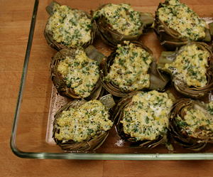

Carciofi al forno
6 von 66 Artischocken waschen und die äusseren Blätter entfernen. Die Stiele spitz zulaufend schälen und die harten Blattspitzen abschneiden. Die Artischocken mit in Wasser mit Zitronensaft und Salz 5 Min. vorgaren, abgiessen und in eine Ofenform legen.
Für die Füllung Petersilie und Knoblauch fein hacken. Beides mit Ricotta, einem Ei, Semmelbröseln und 50 gr geriebenem Pecorino verrühren. Mit Salz und Pfeffer abschmecken. Ricottamasse auf die Artischocken verteilen, mit Olivenöl beträufeln. Bei ca. 180 Grad backen.
